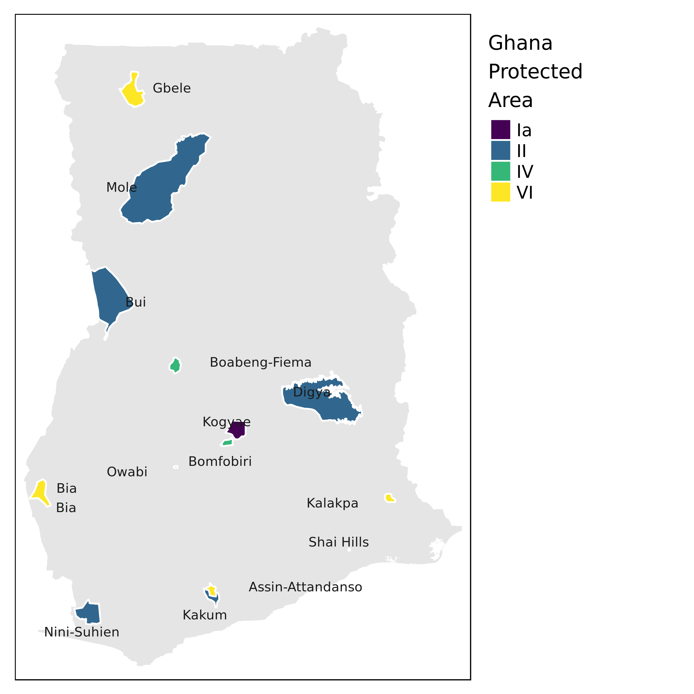
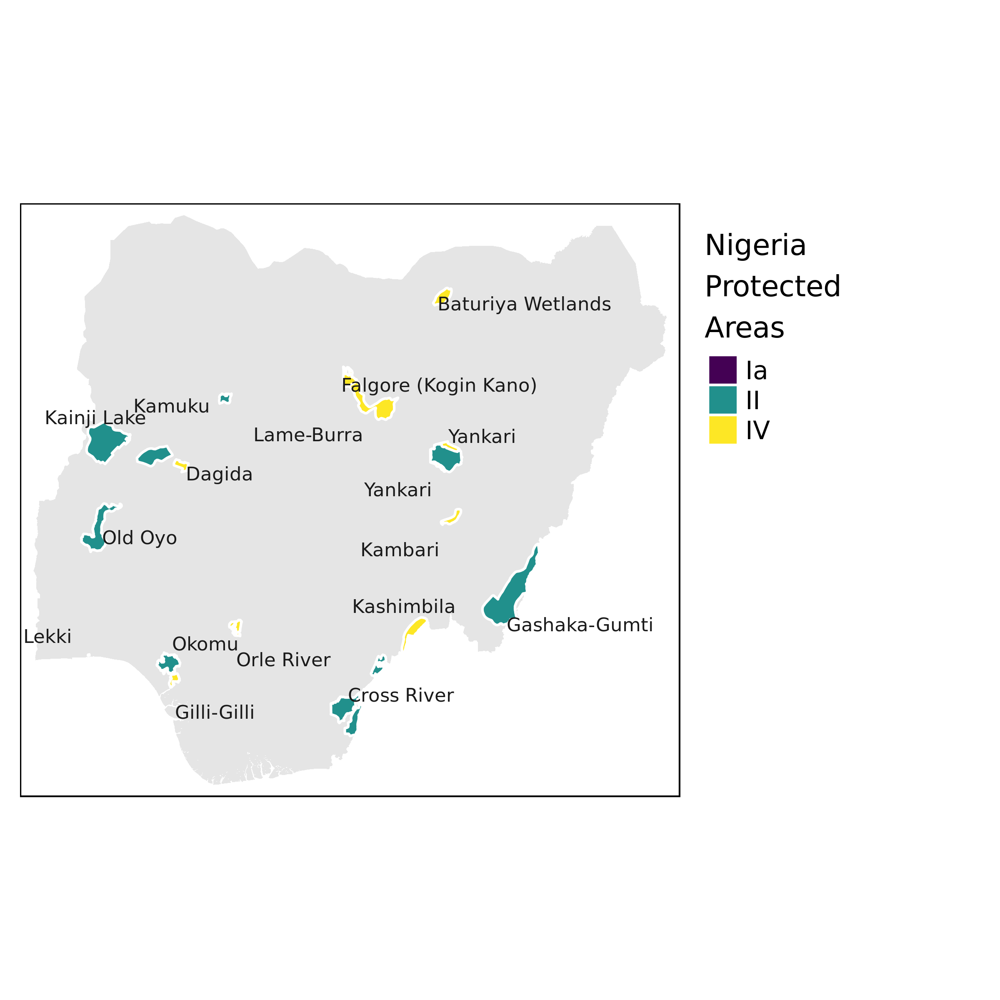
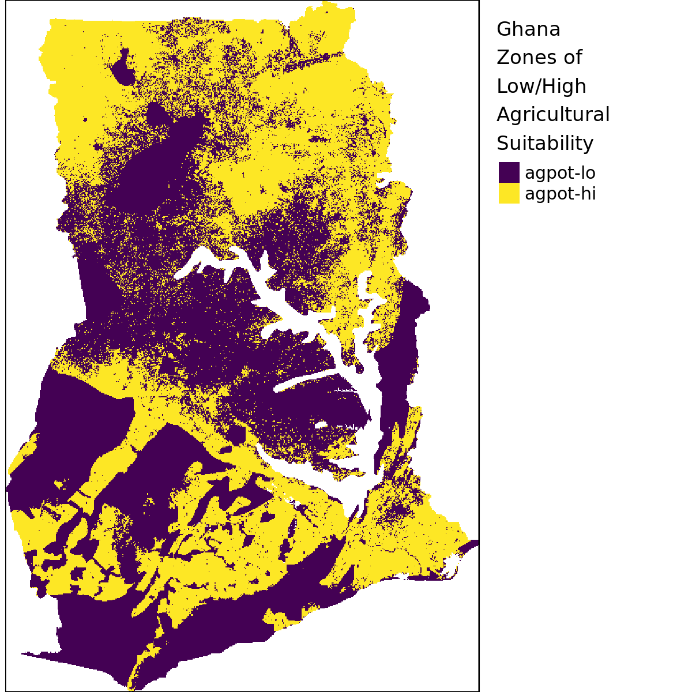
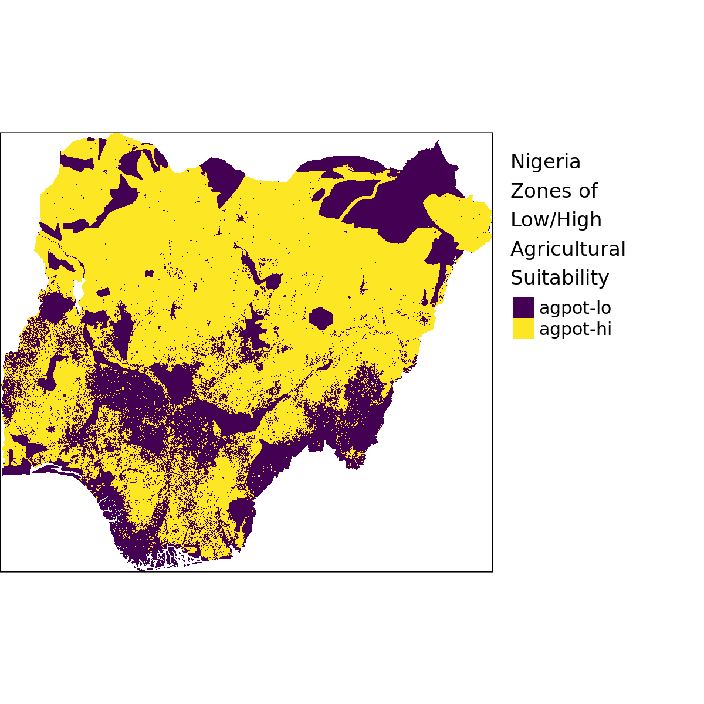
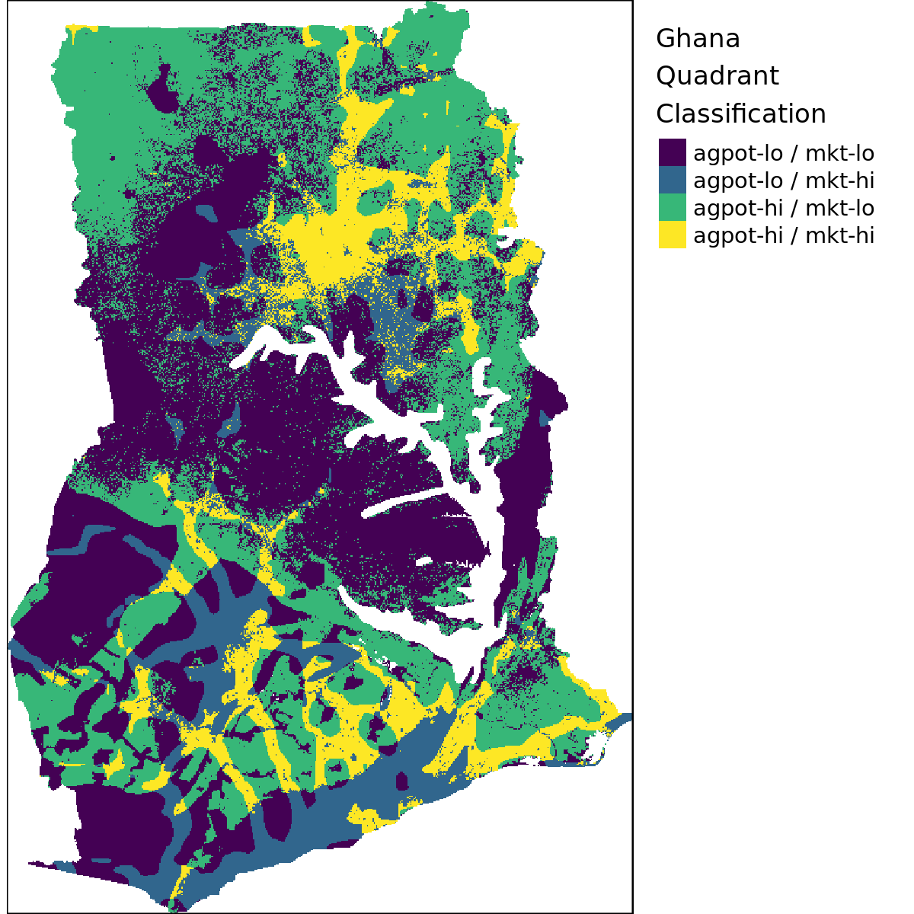
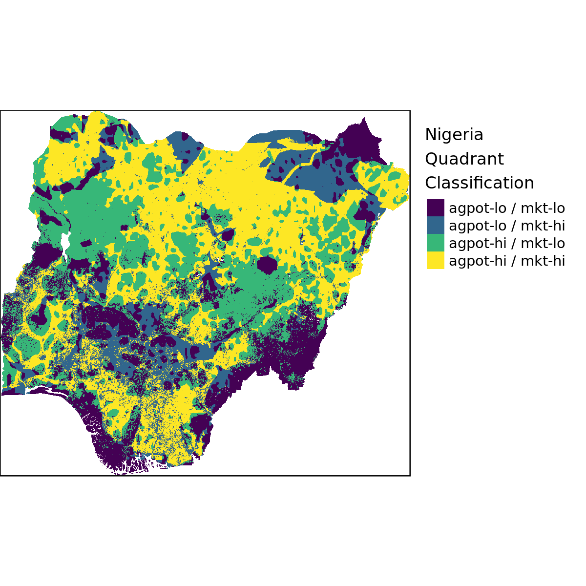

Section 2 Quadrant Classification
Maps showing quadrant classification for Ghana and Nigeria. In this iteration the steps are as follow:
- Start from GLUES agricultural suitability map for West Africa (all crops combined) at 1km resolution
- Mask out forest and urban areas based on ESA LULC map at 300m resolution. The exact classes that are considered not (low) suitable are:
| Code | Label |
|---|---|
| 50 | Tree cover, broadleaved, evergreen, closed to open (>15%) |
| 60 | Tree cover, broadleaved, deciduous, closed to open (>15%) |
| 61 | Tree cover, broadleaved, deciduous, closed (>40%) |
| 62 | Tree cover, broadleaved, deciduous, open (15-40%) |
| 70 | Tree cover, needleleaved, evergreen, closed to open (>15%) |
| 71 | Tree cover, needleleaved, evergreen, closed (>40%) |
| 72 | Tree cover, needleleaved, evergreen, open (15-40%) |
| 80 | Tree cover, needleleaved, deciduous, closed to open (>15%) |
| 81 | Tree cover, needleleaved, deciduous, closed (>40%) |
| 82 | Tree cover, needleleaved, deciduous, open (15-40%) |
| 90 | Tree cover, mixed leaf type (broadleaved and needleleaved) |
| 160 | Tree cover, flooded, fresh or brakish water |
| 170 | Tree cover, flooded, saline water |
| 180 | Shrub or herbaceous cover, flooded, fresh/saline/brakish water |
| 190 | Urban areas |
| 200 | Bare areas |
| 201 | Consolidated bare areas |
| 202 | Unconsolidated bare areas |
| 210 | Water bodies |
| 220 | Permanent snow and ice |
- Mask out protected areas by rasterizing the 2017 version of the IUCN World Database of Protected Areas (WDPA) shapefile to 1km resolution (shown below)
- Classify the resulting raster into zones of low/high suitability using a cutoff at 40%.
- Overlay the suitability raster with IFPRI/HarvestChoice Travel Time to 100K Market reclassified into zones of low/high market access using a cutoff at 4hrs (2010 version resampled from 10km to 1km)

Fig. 2.1: Protected Areas not Suited for Agriculture (source: WDPA 2017)

Fig. 2.1: Protected Areas not Suited for Agriculture (source: WDPA 2017)

Fig. 2.2: Agricultural Suitability (after masking out unsuitable land use/cover and protected areas)

Fig. 2.2: Agricultural Suitability (after masking out unsuitable land use/cover and protected areas)

Fig. 2.3: Quadrant Classification, Ghana and Nigeria

Fig. 2.3: Quadrant Classification, Ghana and Nigeria